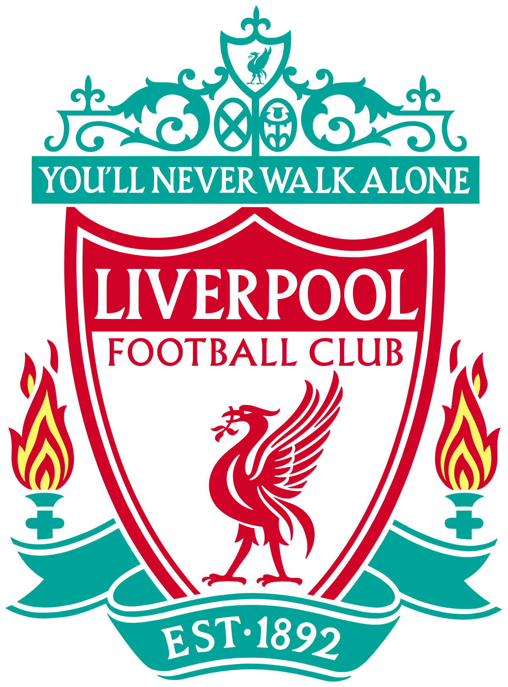

| الاسم الكامل | محمد صلاح محروس غالي طه |
| تاريخ الميلاد | 15 يونيو 1992 |
| محل الميلاد | نجريج الجمهورية المصريه |
| العمر | 29 سنة |
| الطول | 1.75 متر |
| الجنسية | الجمهورية العربيه المصرية |
| محل الاقامة | ليفربول-انجلترا-المملكة المتحدة |
| مركز اللعب | جناح ايمن |
محمد صلاح حامد محروس غالي (من مواليد 15 يونيو 1992، بمدينة نجريج في مصر)، هو لاعب كرة قدم دولي مصري، يلعب في مركز الجناح الأيمن مع نادي ليفربول في الدوري الإنجليزي الممتاز ومنتخب مصر يُعد أحد أبرز اللاعبين العرب والأفارقة، حيث حصد العديد من الجوائز أبرزها جائزة أفضل لاعب في إنجلترا 2018، جائزة هدف الموسم في الدوري الإنجليزي الممتاز لموسم 2017–18، وجائزة الاتحاد الأفريقي لأفضل لاعب في أفريقيا لعامي 2017 و2018 ،جائزة أفضل لاعب أفريقي بواسطة البي بي سي لعامي 2017 و2018، وأفضل لاعب في الدوري الإنجليزي لعام 2018 ، وجائزة الحذاء الذهبي في الدوري الإنجليزي الممتاز (هداف الدوري الإنجليزي الممتاز) عامي 2018 و2019. اختير من قبل مجلة تايم الأمريكية في عام 2019 ضمن أكثر 100 شخصية تأثيرًا في العالم بدأ مسيرته في صفوف الناشئين في نادي المقاولون العرب حتى تم تصعيده إلى الفريق الأول، ثم اتجه للاحتراف في أوروبا وانضم لنادي بازل السويسري وتشيلسي الإنجليزي وفيورنتينا وروما الإيطاليين وناديه الحالي ليفربول الإنجليزي. حقق صلاح مع ناديه الأوروبي الأول بازل العديد من الألقاب، فحصل معه على لقب دوري السوبر السويسري موسم 2012–2013، وجائزة أفضل لاعب في دوري السوبر السويسري لعام 2013، ثم انضم محمد صلاح إلى نادي تشيلسي الإنجليزي وحصل معهم على لقب الدوري الإنجليزي الممتاز موسم 2014–15 وكذلك كأس رابطة الأندية الإنجليزية المحترفة 2014–15 ولكنه لم يشارك بصفة أساسية مع الفريق ثم انتقل على سبيل الإعارة لنادي فيورنتينا الإيطالي ثم انتقل إلى نادي روما وشارك معه طوال موسمي 2015–16 و2016–17 في 83 مباراة أحرز فيها 34 هدفاً. وفي 2017 انضم لنادي ليفربول بصفقة بلغت 42 مليون يورو بالإضافة إلى 8 مليون يورو كحوافز. ليصبح حينها أغلى لاعب عربي وأفريقي عبر التاريخ وثاني أغلى لاعب في تاريخ النادي، وحقق معهم موسمًا قويًا للغاية حيث أختير 3 مرات كلاعب الشهر في الدوري الإنجليزي، ونجح في تسجيل 44 هدفًا خلال موسم واحد ليصبح أحد أكبر هدافي الفريق من حيث عدد الأهداف في موسم واحد. وفي موسمه الثاني مع الفريق نجح صلاح أيضًا في تقديم مستوى متميز من خلال تسجيل 27 هدفًا وصناعة 10 أهداف والمساهمة في تتويج الفريق بدوري أبطال أوروبا. وعلى المستوى الدولي لعب محمد صلاح مع منتخب مصر للشباب في كأس العالم للشباب 2011، ثم المنتخب الأوليمبي المصري في أولمبياد لندن 2012 وحصل جائزة أفضل لاعب صاعد في إفريقيا لعام 2012 ثم شارك مع المنتخب المصري الأول وكانت مباراته الدولية الأولى خلال التصفيات المؤهلة لكأس الأمم الأفريقية 2013 ضد سيراليون ثم شارك في التصفيات الأفريقية المؤهلة لكأس العالم 2014 والتصفيات المؤهلة لكأس الأمم الإفريقية 2015 ولم ينجح المنتخب المصري في التأهل لأي من البطولات الثلاث ولكن صلاح كان هداف التصفيات الإفريقية المؤهلة لكأس العالم 2014 بإحرازه 6 أهداف بالمشاركة مع أسامواه جيان ومحمد أبو تريكة. وتم اختياره ضمن فريق العام في إفريقيا في 2016. عقب ذلك نجح المنتخب المصري في التأهل لكأس الأمم الإفريقية 2017[33] ونجحوا في تلك البطولة في الوصول إلى نهائي البطولة لكن حققوا مركز الوصيف بعد الخسارة من الكاميرون بنتيجة 1–2 في النهائي وتم اختياره ضمن التشكيلة المثالية لكأس الأمم الإفريقية 2017. وشارك أيضاً بشكل فعال في تأهل المنتخب المصري لكأس العالم 2018 بعد غياب منذ كأس العالم 1990ـ وذلك من خلال تسجيله لهدفي فوز مصر على الكونغو بنتيجة 2–1 وهي المباراة التي ضمنت تأهل منتخب بلاده إلى المونديال.